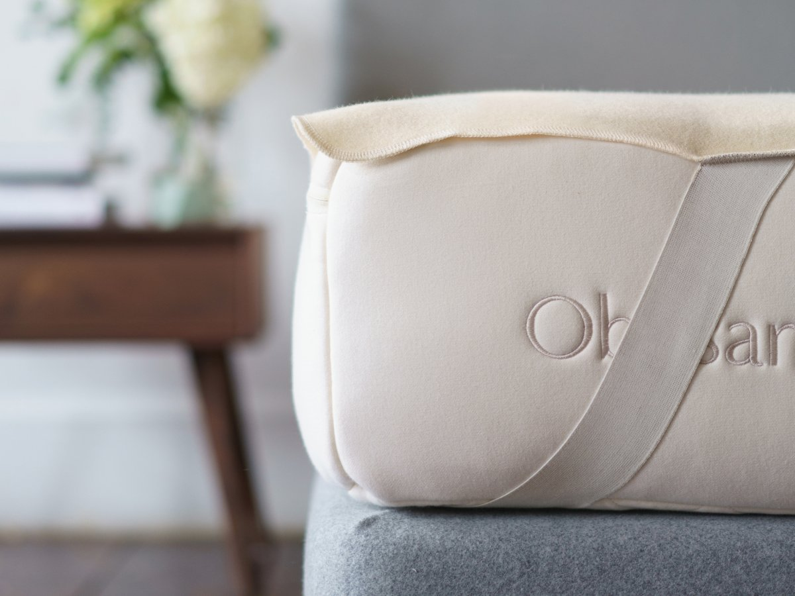

What can designers do to help tackle the climate change crisis?
We talk to graphic, product and industrial experts about the responsibilities the
industry has in helping to save the planet, from designing persuasive visual campaigns through to
better
public transport and car-sharing schemes.
As environmental activist group Extinction Rebellion took to the streets to protest
this
month, people across the world are waking up to the impact human intervention has had on the planet,
from carbon emissions and rising global temperatures to plastics polluting the oceans.
While the group’s interferences across London, Edinburgh and more look to push
governments
to take the issue seriously and cut carbon emissions to zero by 2025, climate change activists
recognise
that is crucial for both policy-makers and individuals to take action — another of the
organisation’s
demands is to create a citizens’ assembly, allowing the public to oversee authorities’ progress and
contribute to the cause.
Much of the debate around pollution, carbon emissions and climate change is centred
around
the consumerist and Capitalist nature of Western culture in particular, which fuels people’s
obsession
with buying, throwing away and replacing goods. Fast fashion and electronics are two of the biggest
culprit industries; the UK has the highest consumption of new clothing in Europe, with an estimated
23
million items of clothing sent to landfill in 2017.
As creators of new “stuff”, from advertising posters through to smartphones, furniture
and
magazines, designers have a role to play in the responsible sourcing of materials and production of
goods. Equally, digital and UX (user experience) designers creating new websites, apps and
artificial
intelligence (AI) technology are at the forefront of a movement that is enabling physical things to
become intangible, helping to cut physical waste by bringing music, books, radio and more into the
digital space.
However, it is easy to forget that digital products such as websites and apps also have
a
carbon footprint — the internet, powered mostly by servers in data centres, consumes a gargantuan
amount
of electricity, while the advancement of digital also means that people’s appetite for new physical
products, such as phones, smart home hubs and virtual reality headsets, is also growing.
Designers of all fields have a responsibility to contribute to helping the climate
change
crisis in some way – whether through upcycling new mobile phones through old components, sourcing
biodegradable
materials for furniture and packaging, or helping to spread a message through effective graphics. In
fact, Extinction Rebellion itself has placed a lot of emphasis on its graphic design, employing an
art
team to create inspiring, consistent and colourful protest materials, open-source for anyone to use.

Graphic designers, illustrators and UI (user interface) designers have a big part to
play
in helping to
decipher dense statistics and information around the environment, from rising temperature and sea
levels
to the number and type of species and habitats becoming extinct. Freelance illustrator, Ben Tallon,
says
that visual communicators should “avoid the temptation to be visually angry and preachy”, and
instead
try to be “clever, subtle and original” in sharing facts that make for difficult reading. The best
way
to do this is through not working in an isolated way, but instead alongside scientists and
environmental
specialists who can help to digest and lay out information, he says.
Tessa Simpson, designer at studio O Street, adds that it is graphic designers’ core job
to
make any
information “digestible” and enticing, and they therefore have a responsibility to do this for “the
biggest problem [the world] currently faces”. “There’s a lot of data out there about the impact of
climate change and now more than ever this needs to be packaged up, branded and communicated to the
masses,” she says.
As well as empowering the public by breaking down arguments visually, Danny Miller,
co-founder at Human After All, adds that designers should use their skills as emotive communicators
to
“truly resonate” with
people, not only simplifying complex data but also sharing stories of human experiences and focusing
on
how people will individually and collectively be impacted by climate change.

Creating a single range of furniture made from a natural material such as cork, seaweed
or
a fungus like
mycelium might be a step in the right direction and is something many designers have attempted in
recent
years – but this is little more than a token gesture towards a massive problem, says Nicolas Roope,
founder at digital studio Poke London.
Rather than creating individual products “in a vacuum”, product and industrial
designers in
particular
should be using their skills and imaginations to actually change industry and “move markets towards
new
modes and behaviours”. One example of this is CupClub, a cyclical coffee cup reusable system,
originally
created by Studio D-Tale, which has since helped to form part of a wider conversation around
reusable
cups and plastic waste. “Designers should make these steps feel like progression, not compromise,”
says
Roope.
Paul Priestman, co-founder at industrial studio PriestmanGoode, agrees that designers
should be thinking
on a “macro”, or large-scale, level, tackling societal issues such as public transport and city
infrastructure. This includes helping to design bus and train networks that are more accessible,
better
walking routes around cities, and vehicle-sharing systems that complement the advancement of
self-driving cars. As well as benefiting the environment, all these societal changes would impact
populations in other ways, he says, including improving general health and wellbeing, and creating a
more inclusive environment for those with disabilities and physical impairment.
When it comes to creating smaller, mass-produced products such as electronics and
furniture, Priestman
adds that designers have a responsibility to create “consumer products that last”, or which can be
“repurposed”, rather than encouraging a throw-away culture. In doing so, this will have a wider
impact
on people’s buying and living habits: “We need to move away from a culture where people want to
change
their mobile phone every six months,” he says. “It’s about changing consumer behaviour as well as
affecting the supply chain.”

Design studio leaders are very much aware of the bottom line, and the subsequent need
to
balance
worthwhile but lower-paying jobs, such as charity work, with less inspiring, corporate projects that
bring in money.
But Katie Cadwell, senior designer at Supple Studio, says that given the scale of
climate
change,
designers today do have a moral obligation to be pickier about which clients they work with, adding
that
“working with someone is endorsing them”.
Recent examples of studios committing to eco-friendly and worthwhile projects include
NB
Studio’s
branding and packaging for sustainable children’s clothing brand Petit Pli, and studio Ilka’s
collaboration with the Glasgow Chamber of Commerce to create Circular Hub, an exhibition showcasing
products designed to be reused and recycled.
Equally, Pentagram used its authority as a global design entity to promote
environmental
group Do The
Green Thing in 2016, through creating its Christmas campaign Ungifted, which encouraged consumers to
give “time rather than tat” as presents, using the power of visual communication to help limit mass
consumption.

“If we all made a decision to only work for people who are doing good by our planet,
then
the
best-looking brands on the shelves would also be the ones with an eye on our future,” says Cadwell.
“We
should be using our powers for good.”
Jonathan Barnbrook, a graphic designer well-known for his political work protesting
issues
such as the
arms and weapons trade, agrees that designers should be “using their creativity in a way that is
useful
to society”, rather than producing “‘cool’ work for companies that encourage endless consumption”.
He
also recognises that studios face challenges in doing so, including a less steady income, being
rejected
by potentially lucrative and commercial clients in the future and the risk of a more daring or
maverick
project not working out.
“It is not an easy path to be contrary, but really what is more important – that you
are
comfortable or
that you are decent?” he says. “Designers, no matter where they work, as citizens of the world first
and
foremost, and need to do whatever they can to be good citizens.”
Bearing in mind Barnbrook’s point of the necessity to be a “good citizen” as well as a
good
professional, designers should be advocating sustainability and limited consumption in their own
personal lives as well as work lives, adds Cadwell.
“We need to get rid of apathy, and do things on a smaller scale too,” she says. “We
should
stop thinking
‘recycling this one baked bean tin won’t matter’, as well as ‘it’s fine taking on this one client
that
makes me feel a bit uneasy’. It’s time we stopped excusing ourselves with ‘it won’t make a
difference’.”
Does This Lunch Bag Symbolize Where Product Design is Heading in This Climate Change Era?
As environmentalists, business owners and worried citizens, we believe the foundation
of
solutions to
climate change and this environmental crisis will consist of small, simple changes by everyday
individuals and businesses, coupled with broad systems change. In her recent speech at the Brilliant
Minds conference, wise-beyond-her-years youth climate activist Greta Thunberg stated, “I know we
need a
system change rather than individual change. But you can not have one without the other.”
Gone are the days when waste can be generated without repercussions, when emissions are
not
a concern,
and a sustainable mindset is viewed as ‘hippie’. We now know that we must put sustainability at the
forefront of every sector and in every decision.
For us, as an online eco-friendly store, LifeWithoutPlastic.com, we decided to push our
own
boundaries.
For our business, plastic-free, safe, high-quality and ethically made are core criteria. For some
eco-businesses, that would be enough. But we continuously push ourselves to go further… how else can
a
society progress…right? We set out to create a truly “cradle-to-cradle” product.
In 2017, we decided to create the first 100% plastic-free, insulated, machine-washable
lunch bag. It
sounded crazy to us that such a product did not exist. Yet, from aisle to aisle of department
stores,
back-to-school sections, and home office stores, we kept finding the same thing: supposedly
“eco-friendly” reusable lunch bags made of cheap plastic that will inevitably end up in the
landfill.
We, as humans, have dug ourselves into a plastic crisis, and it’s everyday items – like
the
lunch bag –
that must transform if we want to dig ourselves out of it. Plastic pollution is a global threat. It
is
threatening the health of our planet, and the health of wildlife and humankind as it infiltrates the
global food chain. A recent comprehensive analysis of the fate of all plastics produced to date
estimates that if current plastic production and waste trends continue, 12 billion metric tons of
plastic waste will end up in landfills or the natural environment by 2050 (source: Geyer et al. in
Science Advances). Plastic foam-insulated lunch bags contribute to this problem by being practically
non-recyclable and having a relatively short life-cycle due to the difficulty of repairing and
cleaning
them properly.
So, in 2017, we took to Kickstarter to create a genuinely sustainable lunch bag, one
that
was not just
plastic-free, but a cradle-to-cradle product, made of wool and cotton leftovers from a local
mattress
company’s manufacturing process.

Cradle-to-products challenge the status quo of eco-responsibility in the business
world.
They challenge
not only how products are made, but what they are made from. Also called regenerative design,
cradle-to-cradle product design is concerned with a whole system approach to design. Most products
we
see in any given store are ‘cradle-to-grave’: products designed with raw materials destined to end
up in
the landfill later. In a world of products that are designed to become obsolete, to break and to
wear
down, cradle-to-cradle products challenge the status quo.
When we set out to create this lunch bag, we partnered with Obasan, a dynamic organic
mattress company
based in Ottawa, Ontario, Canada, to reuse the organic wool and cotton cutouts discarded during
Obasan’s
mattress manufacturing process. These fibers are repurposed into thick insulating panels that fit
snugly
into built-in pockets sewn inside the bag. The panels are easily removable, making the bag
machine-washable.
Cradle-to-cradle is a design concept inspired by nature. In nature, there is no waste.
In
their 2012
book, Cradle-To-Cradle: Remaking The Way We Make Things, Michael Braungart and William McDonough
said:
“Everything is a resource for something else. In nature, the “waste” of one system
becomes
food for
another. Everything can be designed to be disassembled and safely returned to the soil as biological
nutrients, or re-utilized as high-quality materials for new products as technical nutrients without
contamination.”
For this reason, and many more, we prioritized organic cotton in creating our lunch bag
and
other
products. A significant effort in the organic movement is to use growing systems that replenish and
maintain soil fertility and build biologically diverse agriculture using far less water than
traditional
growing techniques. Despite all the reasons to use organic cotton, less than 1% of all cotton grown
is
organic. Simply put, how can a growing practice that takes takes takes from the Earth without
replenishing be considered sustainable? We are living on a planet with finite resources after all.
This bag took over a year to perfect, required Kickstarter funding, intense research
and
public support,
but we finally brought it to life, and it’s genuinely one of a kind.
In this environmental crisis, every single industry plays a role. We must prioritize
durable products
that do not deplete natural resources, rid ourselves of the disposable mindset, and be conscious of
the
impact our buying choices have on the planet. To us, cradle-to-cradle products emphasize a holistic
business practice – one that recognizes we are living on a finite Earth and that infinite wants are
not
feasible.
It might be a simple symbol, but to us, our Clean Lunch Bag represents where product
design
should be
heading. We hope this product and its conscientious design help inspire a new wave of product
design.
Design for a warming world
Three years ago, the international community made a commitment to protect our
collective future by ensuring that global temperatures do not rise more than two degrees Celsius.
U.N. Environment’s latest Emissions Gap report estimates that it is “extremely unlikely” that that
can be achieved if global carbon emissions don’t peak in 2020 and states don’t meet their individual
emission reduction targets by 2030. “Industry and the financial community can and must collaborate
to provide the conditions that foster and fast-track innovative solutions,” the report states. “This
is the only way to keep the global temperature rise below 1.5 degrees and reduce the human and
economic cost of pollution.”
Joe Speicher, executive director of Autodesk Foundation, and Chad Frischmann, research
director at
Project Drawdown, talk to Demand about the role of design thinking and tools in enabling climate
friendly technological innovation.
Demand: Chad, your organization, Project Drawdown, has identified 80 solutions that can
have a
material impact on climate change as well as 20 promising ideas. But “impact” in climate change is
often framed in big numbers that can be very hard to relate to on an everyday level. How do you
communicate the concept of impact in your work?
Frischmann: I have trouble explaining to people what the scope of a “gigaton” is. But
numbers are
valuable because they allow us to rank. I don’t love that term — rank — but it gives us an
estimation of what is most impactful. Numbers allow us to quantify how these things all relate to
one another.
To really inspire people, numbers are helpful, but it’s really communicating that into
action and
getting rid of the discourse of fear and empowering people to do things at all levels of society. We
need businesses, households, governments and farmers to all take action. The whole fabric of society
needs to be involved.
Demand: Joe, how does a software company like Autodesk identify its role in taking
action on climate
change?
Speicher: When most companies talk about sustainability as a corporate initiative, it’s
generally
seen as a cost center. Ours is about helping customers be more sustainable in how they design and
make things.
Autodesk tools are the primary tools for the built environment and for designing
products that we
use in the world. For all intents and purposes, we’re an automation company, helping designers
automate their decisions around geometry. So how are we at Autodesk going to be good global
citizens? It’s not supporting orphanages or reforming healthcare. If we want to have an impact as a
company, helping our customers design and make products that reduce emissions a prepare for a warmer
planet is the best use of our resources.
The opportunity to influence the tools that are used in design is huge. We’re able to
[help]
automate decisions that align with sustainability — how to pick better materials, design buildings
to be more energy efficient, etc. It’s the single biggest leverage point that we have in terms of
impact.
Demand: Where could sustainable design thinking have the biggest impact on climate
change mitigation
and/or adaptation?
Frischmann: The top one is a material: refrigerants. Most refrigerants are made from
hydrofluorocarbons (HFCs). HFCs’ global warming potential is 1,000-times greater than carbon
dioxide.
In terms of impact, what we have looked at is management of HFC leakage. The big
problem is when
appliances get discarded, and the HFCs leak in a landfill. There are management practices out there,
like destroying HFCs at the end of life (through incineration, for example), but not enough.
The other thing to consider is to reduce or phase out HFCs altogether, like we did with
chlorofluorocarbons. If you phased out HFCs, you could get rid of 160-gigatons of C02 equivalent.
The Kigali Accord in 2016 outlines a framework for phasing out the production of HFCs in high,
middle, and low-income countries, and replacing them with alternatives like ammonium and carbon
dioxide.
Demand: To reduce climate impact, we would need to use more carbon?
Frischmann: Carbon dioxide in this case would actually be better because the quantity
required for
refrigeration would be quite low. There’s also a natural cycle for carbon, and it has lower global
warming potential than HFCs. Carbon can also be absorbed in plants, whereas HFCs stay in the
atmosphere for hundreds of years. We can even destroy CO2 in the ground before it gets to the
atmosphere.
Demand: What kind of progress are we making on phasing out HFCs?
Frischmann: It’s about investing in innovative alternative technologies. There are an increasing
number of alternative sources of natural refrigerants coming on the market. And there are very few
HFC producers, so there is a lot of room in the market for bottom-up alternatives. One that’s
interesting is a research program that is looking at nanofilm that can cover fresh produce. It
preserves the lifetime of produce without ever have to use a refrigerator and washes off easily.
Demand: To what extent to we need to create new climate-friendly technology versus drive adoption of
existing technology?
Frischmann: There’s a lot of room for innovation in proven technologies as well as new
ones.
Innovation allows us to test the waters and ultimately get to the “next generation.” Think about
third and fourth generation solar panels. By improving the capacities that allow them to be more
efficient and take up less space, we use fewer materials and reduce costs for consumers. That drives
adoption, and those solar panels become part of a system that feeds into the distribution of energy
and the power grid, and that drives greater renewable energy adoption. It allows populations to
eventually start thinking about how the individual action of installing a rooftop solar panel feeds
into an entire system.
Demand: There are plenty of existing technologies where there is demonstrated impact
but adoption is
still a challenge. That’s because the question of adoption deals with more than cost and materials.
There are cultural factors as well, which also have to be considered in product design.
Speicher: Two examples come to mind for me. The first is BioLite [which is] taking a
proprietary
technology and putting it in a new context. They’ve taken Autodesk’s tools and optimized the
efficiency and design of cookstoves. They have also built a brilliant business model.
The reason BioLite’s cookstoves have a cell phone charging feature is because in order
to sell
cookstoves in developing countries, you have to convince the male head of the household [to buy it].
In East Africa, you can buy cheap cookstoves. There are alternative products [to BioLite’s] on the
market for half to one fifth of the price. Why should a man decide to invest in a high efficiency
stove when there’s no real value proposition to the man? Get it to do something that the man is
interested in. It opens up a new marketing channel.
The second is Build Change [which is] working with homeowners to build more
earthquake-resilient
structures. After an earthquake, people typically rebuild the same way things were built before.
Build Change works with local labor forces in developing countries to rebuild with more resilient
structures, then leaves [communities] with the updated codes and how to enforce those codes. They
are increasingly focused on [other types of] natural disasters. Given the way the 2017 Atlantic
hurricane season devastated southern U.S. and island communities, it’s clear that investing in a
future that will reduce the need for disaster relief is absolutely key.
Demand: The U.N. and a number of other organizations have noted the role of the
financial community
in supporting climate change mitigation and adaptation. A 2017 report from Climate Policy Initiative
noted that the hundreds of billions of dollars in “climate finance” invested every year “remains far
below estimates of what is needed.” How do organizations like Project Drawdown and Autodesk
Foundation help to ensure that limited capital resources get invested in the most promising
technologies?
Speicher: We work with PRIME Coalition, a financial intermediary that has now become an
investor in
climate solutions. PRIME is seeding the market for significant opportunities in energy generation,
distribution and usage. Its requirement for investees is that they demonstrate potential to reduce
carbon emissions by a gigaton. It’s ambitious, but it also addresses the problem at scale.
PRIME is a nonprofit, so we have provided them with grant funding to support their operations and in
certain cases, we’ll provide value added services to the organizations they support that have made
it through their investment committee screening. For example, we are providing a fab lab for
prototyping to the PRIME cohort.
Frischmann: At Drawdown, we try to aggregate all of the data and research out there and
present it
to different audiences in an accessible way. We need to devise more shared lessons and learnings and
have a reinforcing feedback loop.
We actually have a good feedback loop: it’s the earth. The earth is giving us feedback
about what
we’re doing through climate change and global warming. We have to learn from that and be willing to
accept it and share.
Resilient product design principles to address climate change
The term resilience originated in math and physics and refers to returning to an
equilibrium state following a disturbance. Experts in the fields of planetary health and climate
recognize that the environment is always changing. They define resilience as renewal and
reorganization rather than returning to a stable state.
The earth’s climate is changing. In the last 50 years, most of the warming has been caused by
greenhouse gases from humans. As designers, we envision futures, anticipate needs, and create
products and services that impact the world. Designers create change — and we have the power and the
ability to slow and mitigate climate change. We will change the trajectory of global warming if more
products are designed for resilience. We must start immediately.
As part of this work, we surveyed 25 product designers across seven countries representing Africa,
Asia, North America, and Europe. About half of the designers think about the impact of their work on
climate and the environment “all the time”, or “often” — yet only three reported that their
companies had any policies around design for resilience or sustainability.
Sustainability, however, is different than resilience — and it is an important distinction.
Sustainability implies continuity, something that is replenishable or can never run out — like
sunlight. Resilience is the ability to bounce back after a challenge or disaster. Sustainability’s
starting place is a functioning system that will ideally be maintained and improved. Resilience’s
starting place is often with a disaster, the response, how we as a society adapt for now and the
future.
Over the last 50+ years, product design has seen significant improvements to process and practice to
minimize impact on our planet. Many of us are familiar with the excellent work by organizations like
Cradle2Cradle, Fairtrade, Forest Stewardship Council and others to set out product specifications
and criteria for sustainability. Yet, as a community, we lack a broad set of principles.
Our proposed set of principles is not a how-to. An extension of this work is much needed. For
example, the most frequent request we had from designers was a compilation of design tools for
resiliency and advice for implementation: How do we turn these principles into practice? And how do
I stand firm in the face of financial and business challenges to resiliency?
These principles are statements of belief to lead strategy and tools. We were inspired by the work
of architects, who have been at the forefront of developing and implementing principles and tools
for the changing climate and natural world.
We, product design practitioners, must be the ones to articulate resilient design principles for
climate change. Design in practice is messy. Every day we make difficult trade-offs weighing future
benefits against immediate returns, balancing good for people relative to good for the environment,
and profits relative to impact. This is an overdue — and possibly difficult — conversation, and our
hope is that it is the beginning.
Resilient Product Design Principles
1.Resilient systems balance basic human needs with those of the planet. Design for resilience is
inherently user-centered, recognizing the users’ dignity, diversity, and the environment. Basic
human needs include nutrition, clothing and shelter, sanitation, education, healthcare, and
connection with others.
Social equity, diversity, and community build resilience. Humans, like all living beings, are
interconnected. Climate change will disproportionately affect the world’s poorest, exacerbating
existing challenges. Design that promotes equitable distribution of resources to meet human needs
minimizes vulnerabilities and reduces environmental loss. Design that supports respect and more
diverse ecosystems, economies, and voices in decision-making better strengthens global communities
to adapt and respond to interruptions or change.
2.Design for resilience encompasses the design process, the product’s life cycle, and downstream
global effects. We view design broadly from need identification through product usage, the varied
contexts in which the product is used, its impact on the users and the world, and ultimately the
product’s end of life and environmental impact. We consider external system disruptions to our work,
such as intense weather changes, greater economic inequality, pandemics, and physical and
cybersecurity. Designers, to the best of our ability, will assess the impact of our choices, and
where there are negative implications, seek alternatives or mitigate them.
Using reclaimed materials, resource-efficient processes, and sustainable sources of energy are more
resilient. The ultimate goal of resiliency is that resources are reused, as in nature. We prioritize
sustainable inputs and those that require less energy usage. We recognize that a product’s intended
benefits have a finite life, and design for reuse by considering how a product might be reconfigured
for new benefits or as inputs.
Resilience minimizes waste and seeks responsible disposal.Where recovery or reuse is not possible,
we seek to minimize disposal of products, packaging, and system materials to landfills,
incinerators, and the ocean.
3.The principal requirements of resilient products are versatility and durability.
Versatile products are relevant with changing user needs and global conditions.
Resilient products are designed for intuitive use, compatibility, upgradability, ease of
maintenance, variability, reconfiguration, and repair. Simple products are often the most versatile.
Durable products transcend time by offering long-term value to users. Products that recognize the
dignity of the user are valued, handled with greater care, and repaired. Durability also encompasses
the business model: planned and psychological obsolescence, single-use products or components, and
market-driven (rather than user-driven) features are inconsistent with design for resilience.
4.Total resilience is not realistic, yet we act with urgency. We embrace cumulative progress and
understand there are significant challenges in achieving complete resilience with the reality of
daily tradeoffs. We do all we can at present, and build momentum.
5.Sharing best practices and encouraging transparency will accelerate design for resilience.
Collaboration will drive greater cost and resource efficiency, as well as new standards, policies,
and tools for resiliency. By strengthening the knowledge and practice of design, we build a greater
future for life, our planet, and the generations of tomorrow.
We commit to educating — to the best of our abilities — ourselves, decision-makers, and users on the
planetary impact of design decisions, and offer options with greater resiliency.
As designers, we will adapt these principles to our own areas of practice and expertise,
strengthening them, while advocating beyond our professional communities. We are in a position to
educate others as to why design for resilience is critical now at this point in history. The
movement toward change must come from many.
Many designers are already practicing resilient design, and we thank you and hope you will continue
your leadership. You are the future of our practice.
Acknowledgements
These principles are the result of sharing and collaboration of design practitioners across many
fields. Many contributed key opinions, expertise, resources, and learnings — this work is a product
of collective, not individuals. Thank you to the following: Peter Russo, Montana Cherney, Noel
Ekker, Shilpa Das, Elise DeVries, Maria Giudice, Anders Haug, Marcus Heneen, Amina Horozić, Pushkar
Ingale, Seph Lang, Anton Ljunggren, Martin Lukac, Patrice Martin, Jake Moritz, Samuel Murekefu, Luan
Nio, Payan ole-Moiyoi, Robin Parrish, Kyle Reis, Tara Ramanathan, James Sommerville, Jim Taylor,
Casey Trubo, Simon Wachira, and the Autodesk Foundation. Many thanks also to Shelly Hegleson and
Andy Goodman for their invaluable contributions. We also want to acknowledge the work and leadership
of the Resilient Design Institute who articulated principles for resilient architecture which
inspired many of us. There are many designers and environmentalists, too many to articulate, whose
critical work on which we have built our fledgling design for resiliency movement.